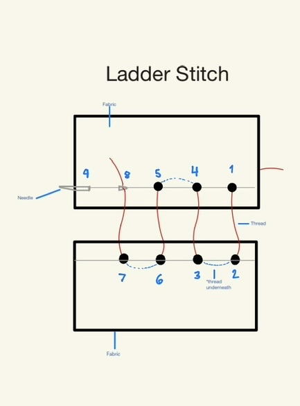

Stuffed Animal Repair

- Hide the knot inside the opening.
- Insert the needle through one folded edge.
- Move directly across to the opposite folded edge.
- Continue sewing back and forth across the opening.
- Pull the thread gently to close the gap.